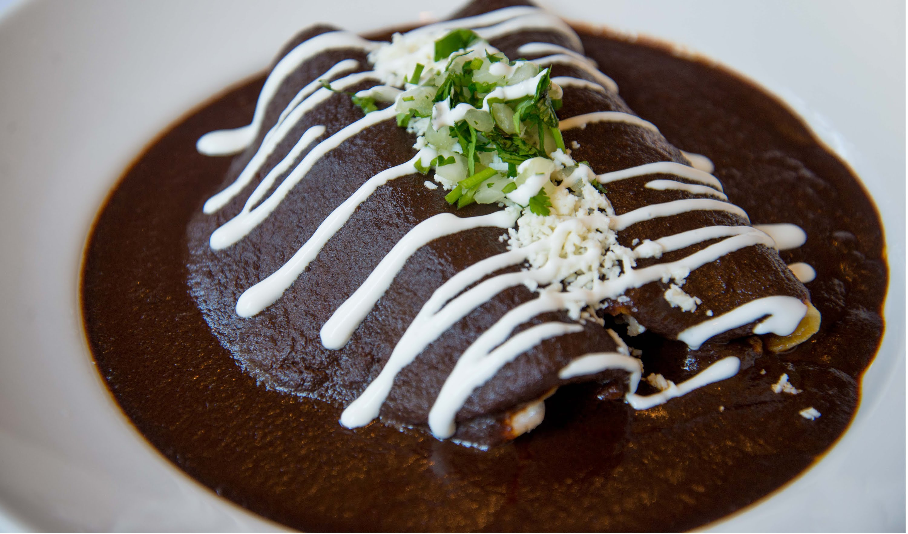

Enmoladas

Enchiladas con mole a las que se le incluye queso o pollo.
Ingredientes
- Tortillas
- Mole
- Pollo o queso
- Cebolla Filieteada
Pasos
- Freír ligeramente las tortillas sobre mole
- Rellenar cada enmolada con pollo
- Baña las enmoladas con mole
- Decora, agregando queso y cebolla encima de cada una